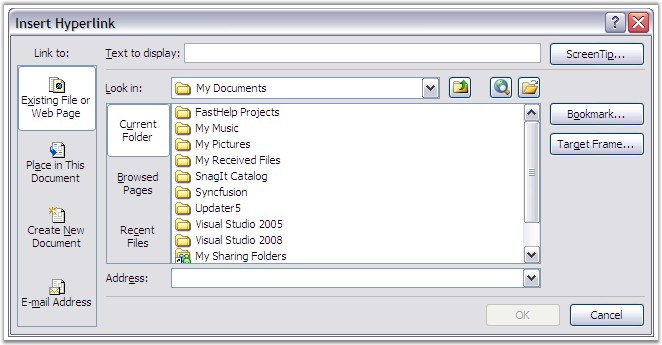

A hyperlink is a colored and underlined text or a graphic, which when clicked, directs to a file, or a location in a file, or an HTML page on the World Wide Web, or an HTML page on an Intranet. It includes the path information to another object. The object can be a target on the same document, a file on the same computer, or a uniform resource locator, giving the location of a web page halfway around the world. The process is exactly the same in all cases. Some point on the document is turned into an active spot, which includes the path information.

Figure 54: Insert Hyperlink Dialog Box in MS Word
Essential DocIO allows to insert, edit and replace hyperlinks as fields by using the Hyperlink class. HyperlinkType enumerator specifies the type of the link in use.
Public Constructor
|
Name |
Description |
|
Hyperlink( WField hyperlink ) |
Initializes a new instance of the Hyperlink class. |
Public Properties
|
Name |
Description |
|
FilePath |
Gets / sets file path. |
|
Uri |
Gets / sets url link. |
|
BookmarkName |
Get/sets Bookmark. |
|
HyperlinkType |
Gets / sets a HyperlinkType object that indicates the link type. Below are the Hyperlink types supported by DocIO.
WebLink - Sets the URI EMailLink - Sets the URI Bookmark - Sets the name of the bookmark FileLink - Sets the file path |
|
TextToDisplay |
Gets or sets the text, which will be displayed on the place of hyperlink. |
The following code illustrates how to find and replace the web hyperlinks.
|
[C#]
WordDocument doc = new WordDocument(); doc.Open("WebLink_1.doc"); Hyperlink hlink = null;
foreach (ParagraphItem item in doc.LastParagraph.Items) { if (item is WField && (item as WField).FieldType == FieldType.FieldHyperlink) { hlink = new Hyperlink(item as WField); if (hlink.Type == HyperlinkType.EMailLink) { hlink.Type = HyperlinkType.WebLink; hlink.TextToDisplay = "Football"; hlink.Uri = "\"http://www.football.ua/\""; } } } doc.Save("WebLink_modified.doc"); |
|
[VB.NET]
Dim doc As New WordDocument() doc.Open("WebLink_1.doc") Dim hlink As Hyperlink = Nothing For Each item As ParagraphItem In doc.LastParagraph.Items If TypeOf item Is WField AndAlso TryCast(item, WField).FieldType = FieldType.FieldHyperlink Then hlink = New Hyperlink(TryCast(item, WField)) If hlink.Type = HyperlinkType.EMailLink Then hlink.Type = HyperlinkType.WebLink hlink.TextToDisplay = "Football" hlink.Uri = """http://www.football.ua/""" End If End If Next doc.Save("WebLink_modified.doc") |
Hyperlink for Images
The following code illustrates how to set hyperlinks for images.
|
[C#]
IWParagraph para = doc.Sections[0].AddParagraph(); WPicture mImage = new WPicture(doc); mImage.LoadImage(Image.FromFile(@"..\..\Nature.jpg"));
// Scaling Image. mImage.HeightScale = 50f; mImage.WidthScale = 50f; IWField field = para.AppendField("Hyperlink", FieldType.FieldHyperlink); Hyperlink hlink = new Hyperlink(field as WField); hlink.Type = HyperlinkType.WebLink; hlink.Uri = "http://www.syncfusion.com"; hlink.PictureToDisplay = mImage; |
|
[VB.NET]
Dim para As IWParagraph = doc.Sections(0).AddParagraph() Dim mImage As New WPicture(doc) mImage.LoadImage(Image.FromFile("..\..\Nature.jpg"))
' Scaling Image. mImage.HeightScale = 50F mImage.WidthScale = 50F Dim field As IWField = para.AppendField("Hyperlink", FieldType.FieldHyperlink) Dim hlink As New Hyperlink(TryCast(field, WField)) hlink.Type = HyperlinkType.WebLink hlink.Uri = "http://www.syncfusion.com" hlink.PictureToDisplay = mImage |